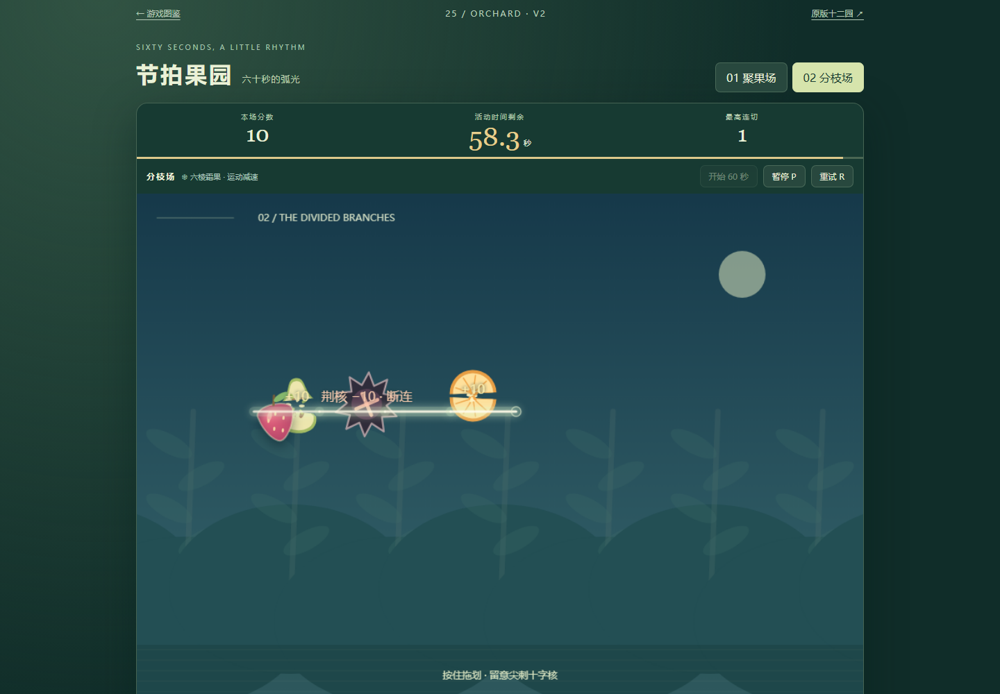
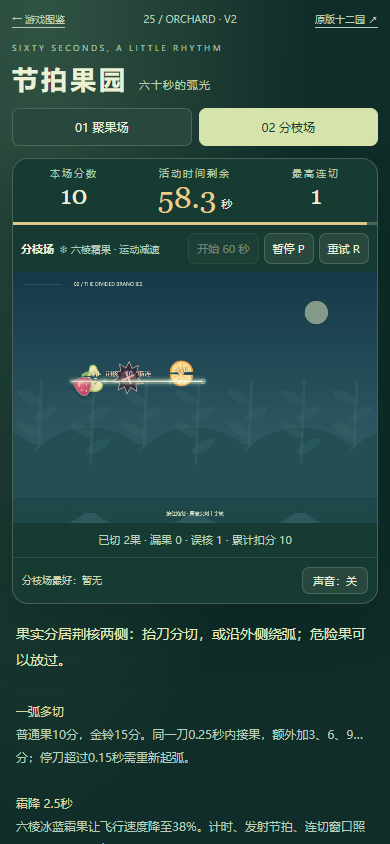
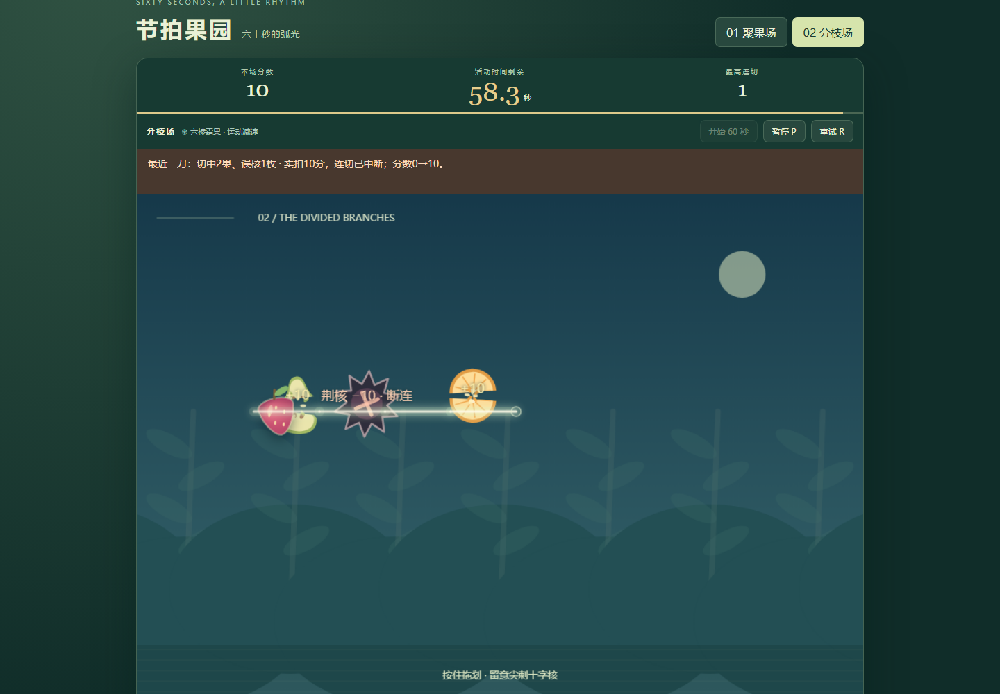
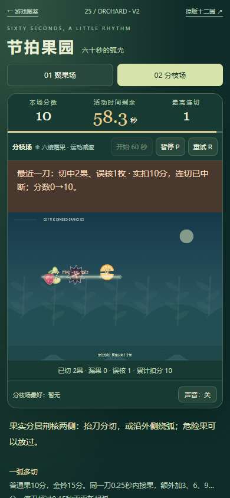
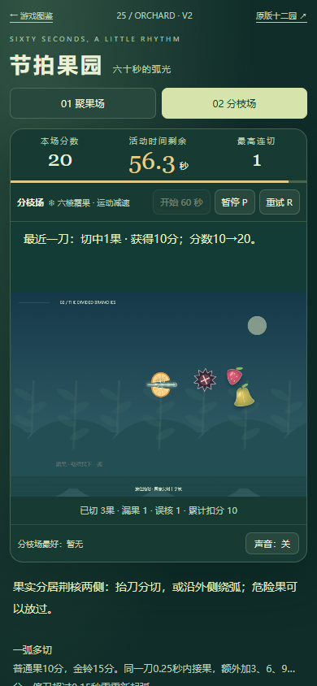
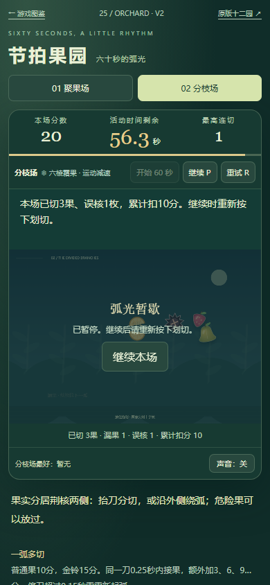
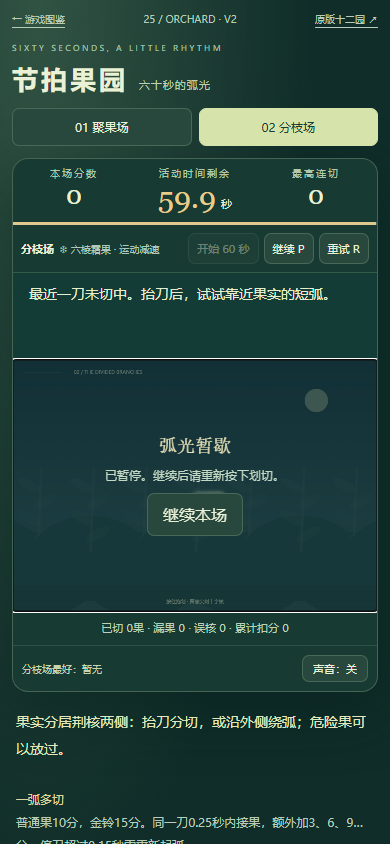
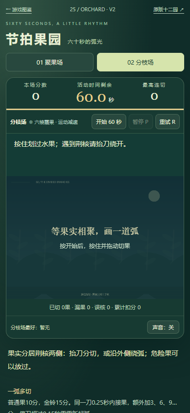

果园v2：读懂最近一刀
误核扣分与续切规则正常；390CSS中的即时文字缩到约6.47像素。本轮只补画布外14px判定，固定预留高度，避免文本换行推动画布。
试玩 · 范围与判断 · 原窄屏实玩 · 终版窄屏实玩 · 终版桌面实玩 · 尺寸测量 · 10组逻辑测试 · 候选修正记录 · 三个候选 · 下一里程碑 · 覆盖索引
- 普通鼠标：同刀误核后切果仍保留原因；下一刀安全得分正常替换。
- 两尺寸原生键盘、重试/暂停/刷新，划切前后画布几何稳定。采用已知发射谱辅助，非人手独立判断。
- 最近一刀不另存字段；刷新只显示本场已知累计事实。原规则、计时、分数、存档不改。
- 首轮候选移动画布与硬编码断言均已修正并留记录；最终双profile重验。扣0/20及终态仅离线模型，未重跑结局。
- 40目录、旧版和历史证据保留；真机/手感/审美未验收。下一里程碑为精选试玩候选包。

原桌面：误核已有动画与小字，规则本身正常
原390CSS：即时荆核/断连文字约6.47CSS像素，累计统计仍可见
桌面：同刀后续切果仍保留误核、实际扣分与断连
390CSS：画布外14px判定，反馈区固定高度，画布不跟随换行移动
下一刀安全切果：新得分替换旧警告
刷新先暂停：游戏记录原值相同，提示只列已知累计事实
Tab到画布、空格和方向键、暂停取消刀光
固定预留反馈区：待命不带入上一局误核提示